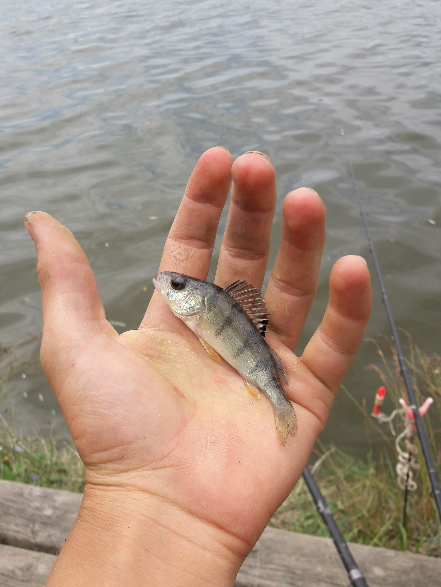
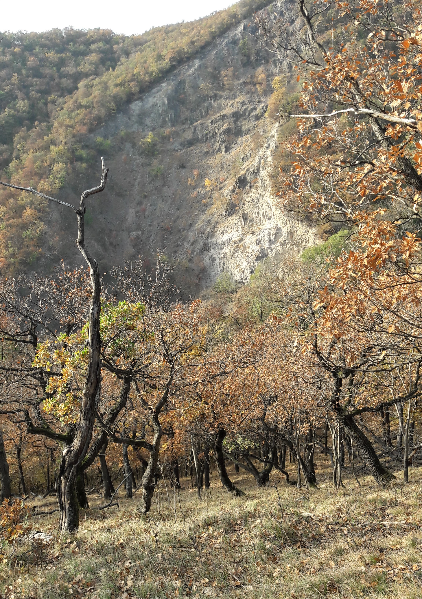
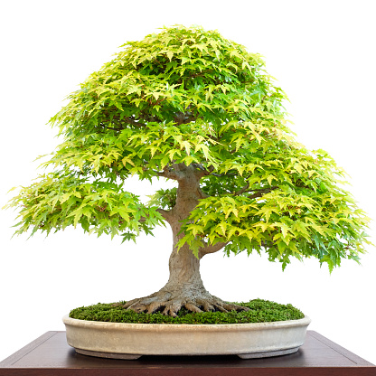

Horgászat
Kicsi korom óta imádok horgászni, főleg vad vízen. Sporthorgászni szoktam, de előfordul, hogy a fogás tányéron végzi.
Túrázás
Túrázni főleg családommal szoktam menni. Általában a Mátrában és környékén.
Bonsai
A "bonsai" körülbelül annyit jelent, hogy "tálban nevelt fa". Nekem még nincs nagy tapasztalatom, ilyen fák kinevelésével, de gyűjtöm a csemetéket, magoncokat és próbálkozok.